2026 학교로 찾아가는 과학발명교실 연수
디지털과 연계한
발명 수업
실습 · 자료
- 인천시교육청 발명교육지원단 · 양상경 (인천효성남초)
- 연수에서 쓴 실습 화면과 수업 자료를 모아 둔 페이지입니다.
- ← → 키나 화면 아래 점으로 넘기고, T를 누르면 목차가 열립니다.
- 마지막 쪽 「자료 받기」에서 수업별 자료를 내려받을 수 있습니다.
실습 · 발명 주사위
발명 주사위
- 주제 고르기
- 「주사위 굴리기」
- 질문에 답하기
- QR을 찍거나 주소로 들어가 주세요. 로그인은 필요 없습니다.
- 주제를 고르고 「주사위 굴리기」를 누르면 공항 안내판처럼 글자판이 넘어가면서 물건 하나와 기법 하나가 나옵니다. 그 아래에 "우산에서 무엇을 빼면 더 편해질까?" 같은 질문이 크게 나옵니다. 양옆의 「물건만 다시」·「기법만 다시」로 한쪽만 바꿀 수도 있습니다.
- 교실 TV로 띄울 때는 오른쪽 위 버튼으로 전체 화면을 켜고, 스페이스 키로 굴리면 됩니다. 숫자 1·2는 물건만·기법만 다시입니다. 소리는 스피커 버튼으로 끌 수 있습니다.
- 기법은 인천시교육청 2024 「차근차근 배우는 발명이야기」의 '발명 10계명' 가운데 더하기·빼기·모양 바꾸기·반대로 하기·용도 바꾸기 다섯 가지입니다.
- 이 웹앱은 아이디어를 대신 내 주지 않습니다. 생각의 출발점만 던져 줍니다.
- 두세 번 굴려 보시고, 떠오른 아이디어를 옆 선생님께 한 문장으로 말해 보세요.
- 활동지에는 나온 물건·기법과 떠오른 아이디어를 적습니다. 주제 「컵」은 물건이 컵으로 고정되고 기법만 굴립니다.
실습 · 직접 만들기
준비
- 한 사람에 노트북 한 대없으면 제 노트북으로 돌아가며
- 크롬 브라우저로 열기
- 노트북 카메라 덮개 열기
- 웃음·놀람·찡그림 만들기
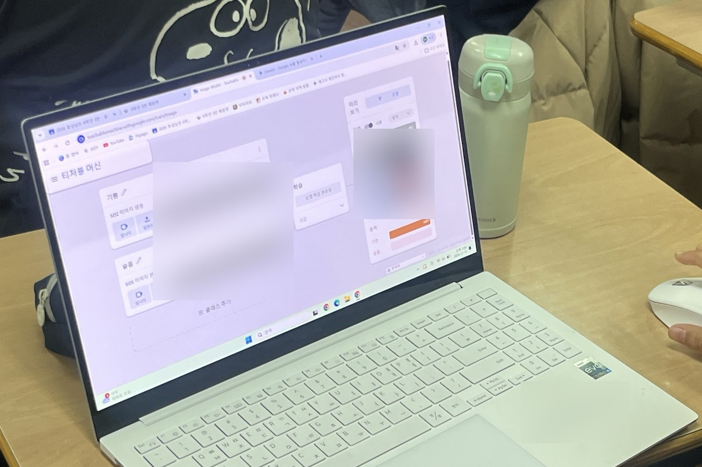
- 시간이 되면 직접 만들어 보겠습니다. 시간이 모자라면 이 부분은 건너뜁니다.
- 노트북이 있으시면 한 분에 한 대, 없으시면 제 노트북으로 돌아가며 해 보세요. 크롬으로 열고, 카메라 덮개가 닫혀 있지 않은지 봐 주세요.
- 수업 PPT는 짝 둘이 노트북 한 대로 짜 두었습니다.
- 전체 6단계, 10분 남짓 걸립니다.
실습 · 직접 만들기
1단계 사이트 열기
- 주소 입력teachablemachine.withgoogle.com
- 「시작하기」 누르기
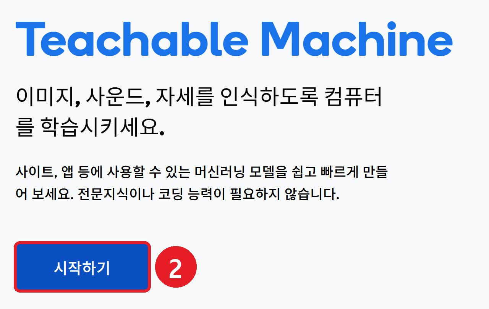
- 주소창에 teachablemachine.withgoogle.com을 치시거나, 검색창에 '티처블머신'을 치셔도 됩니다.
- 화면 아래 영어 쿠키 안내가 뜨면 「OK, got it」을 누르고, 파란 「시작하기」를 누릅니다. 로그인은 필요 없습니다.
실습 · 직접 만들기
2단계 프로젝트 고르기
- 「이미지 프로젝트」
- 「표준 이미지 모델」
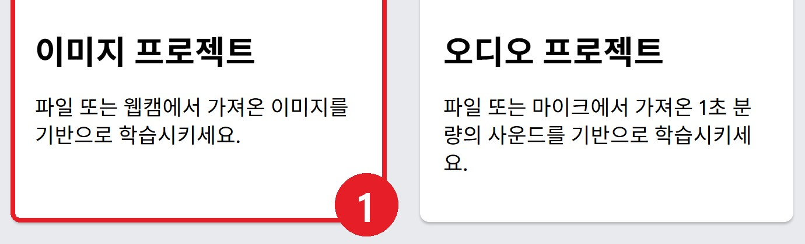
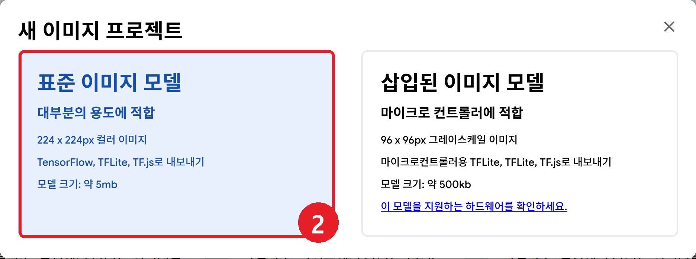
- 세 가지 프로젝트 가운데 맨 왼쪽 「이미지 프로젝트」를 누릅니다.
- 창이 뜨면 「표준 이미지 모델」을 고릅니다.
- 강아지·고양이 구분도, 표정 인식기도 모두 이 이미지 프로젝트로 만듭니다.
실습 · 직접 만들기
3단계 이름 붙이기
- 연필 → 웃음
- 연필 → 놀람
- 「클래스 추가」 → 찡그림
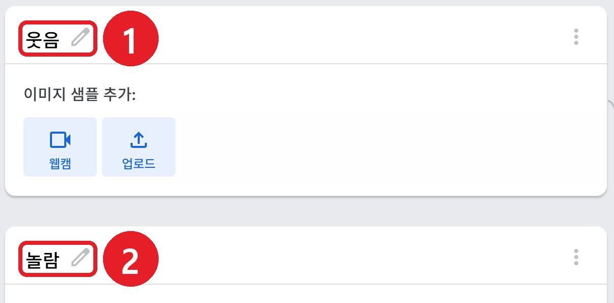
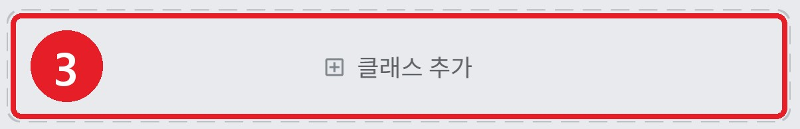
- 「1. 샘플 수집」 안내 창이 뜨면 오른쪽 위 X로 닫습니다.
- 클래스는 AI가 나눌 칸입니다. 처음엔 두 칸이 있습니다. 「Class 1」 옆 연필을 눌러 '웃음', 「Class 2」는 '놀람'으로 바꿉니다.
- 아래 「클래스 추가」를 눌러 세 번째 칸을 만들고 '찡그림'이라고 붙입니다.
실습 · 직접 만들기
4단계 표정 찍기
- 「웹캠」 → 허용
- 「길게 눌러서 녹화하기」30장 넘게
- 놀람 · 찡그림도 똑같이
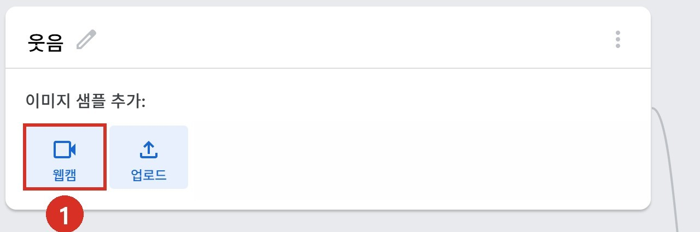
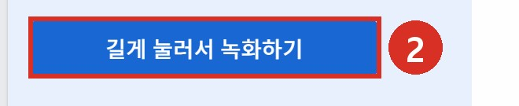
- 웃음 칸의 「웹캠」 → 「방문할 때마다 허용」.
- 웃는 얼굴로 「길게 눌러서 녹화하기」를 꾹 눌러 30장 넘게 찍습니다.
- 놀람·찡그림도 똑같이 합니다.
실습 · 직접 만들기
5단계 학습시키기
- 「모델 학습시키기」
- 끝날 때까지 탭 그대로
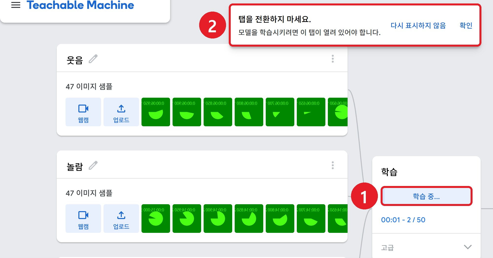
- 가운데 「모델 학습시키기」를 누릅니다.
- 학습하는 동안 다른 탭으로 넘어가면 학습이 멈출 수 있으니, 끝날 때까지 이 화면에 그대로 두세요. 화면 위에도 "탭을 전환하지 마세요"라고 뜹니다.
- 캡처의 초록 화면은 제가 캡처할 때 쓴 시험용 카메라 화면입니다.
실습 · 직접 만들기
6단계 시험하기
- 미리보기에서 표정 바꾸기
- 출력 막대 1등 보기
- 옆 선생님 얼굴로 시험
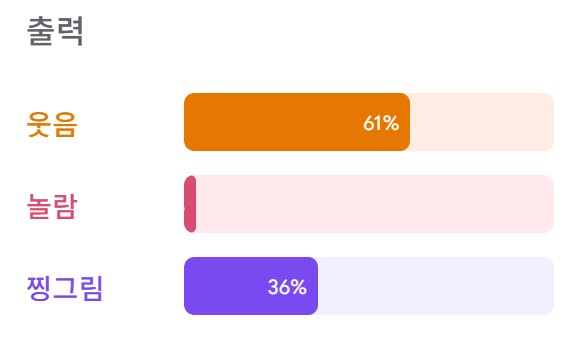
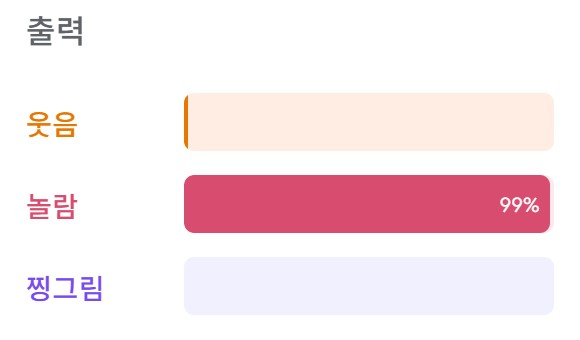
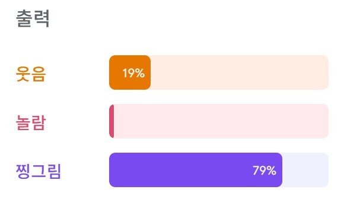
막대 1등이 표정을 따라 바뀌면 성공
- 학습이 끝나면 오른쪽 「미리보기」에 웹캠 화면이 뜹니다. 표정을 바꾸면 웃음·놀람·찡그림 막대가 바뀝니다.
- 막대 1등이 표정을 따라 바뀌면 성공입니다.
- 이번엔 옆 선생님 얼굴로 시험해 보세요. 다른 사람 얼굴에서는 틀리기도 합니다. "왜 그럴까?"가 아이들과 나눌 질문입니다. AI는 배운 것만 압니다.
- 수업 PPT에는 짝 얼굴로 바꿔 시험하는 단계를 넣어 두었습니다.
실습 · 직접 만들기
문제 해결
- 「허용 안함」을 눌렀다면주소창 왼쪽 아이콘 → 카메라 허용 → F5
- 까만 화면이면카메라 쓰는 탭·프로그램 닫고 F5
- 카메라 가림 덮개 확인
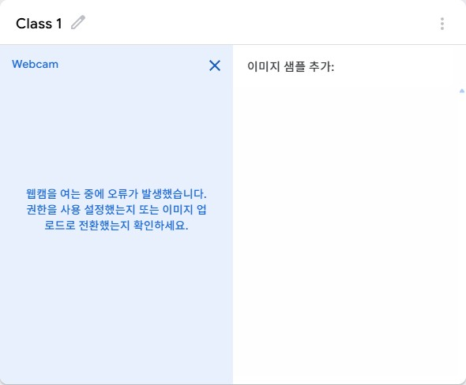
- 「허용 안함」을 누르면 웹캠 칸에 이런 오류 문구가 뜹니다. 주소창 왼쪽 아이콘에서 카메라를 허용하고 새로고침(F5)하면 됩니다.
- 줌이나 카메라 앱처럼 카메라를 쓰고 있는 프로그램이 있으면 닫고 새로고침합니다.
- 웨일·엣지도 똑같이 주소창 왼쪽 아이콘에서 카메라를 허용하면 됩니다.
마무리
발명교육 자료집
인천시교육청 간행물 '발명' 검색 16건, 로그인 없이 받음
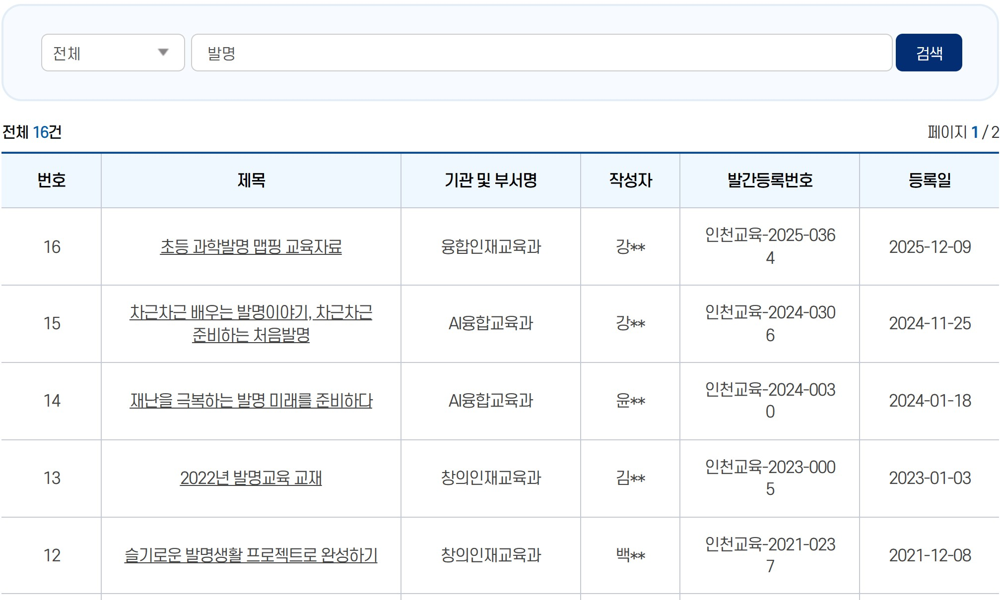
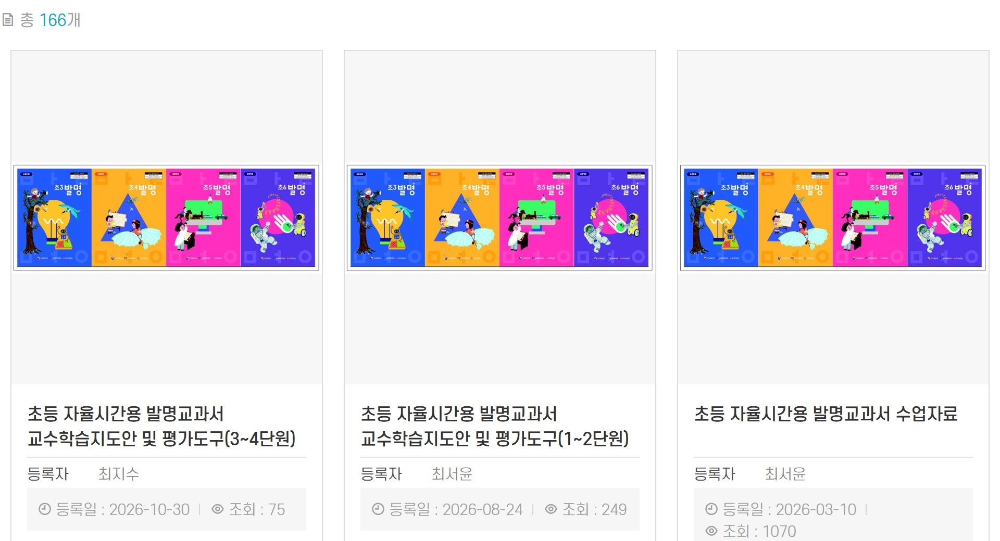
- 오늘 보여 드린 수업은 이런 자료집에서 골라 우리 반에 맞게 고친 것입니다.
- 인천시교육청 간행물 게시판에서 '발명'으로 검색하면 16건이 나오고, 「차근차근 배우는 발명이야기」 같은 초등 발명 교재가 그 안에 있습니다. 첨부는 로그인 없이 받아졌습니다.
- 특허청(지금은 지식재산처)의 발명교육포털에도 발명교육 자료가 올라와 있습니다.
- 교재를 통째로 쓰기보다 한 차시만 떼어 반에 맞게 줄여 쓰시면 됩니다. 나만의 컵 활동지도 교재 프로젝트를 40분에 맞게 줄인 것입니다.
마무리
자료 받기


- 위 줄은 오늘 소개한 수업 세 개의 자료를 수업별로 묶은 zip입니다. 누르면 바로 받아집니다. 수업 PPT와 학생용 활동지, 예시가 들어 있습니다.
- 아래 줄은 수업의 바탕이 된 자료집입니다. 누르면 공식 페이지가 새 탭으로 열리고, 거기서 받으시면 됩니다.
- PPT는 40분 수업용으로 줄여 둔 것이라 그대로 쓰셔도 됩니다.
감사합니다
질문 받겠습니다 · 양상경 (인천효성남초)
- 들어 주셔서 감사합니다.
- 해 보시다가 막히는 점이 있으면 지원단을 통해 편하게 연락 주세요.
- 이제 질문 받겠습니다.